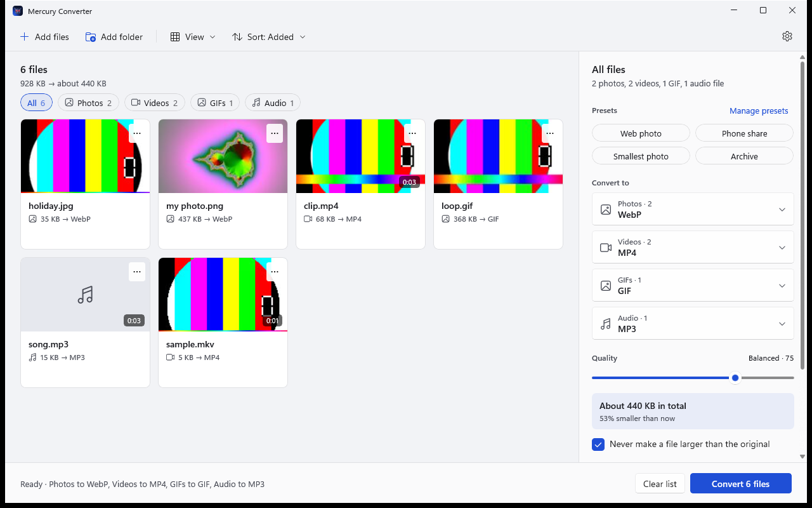
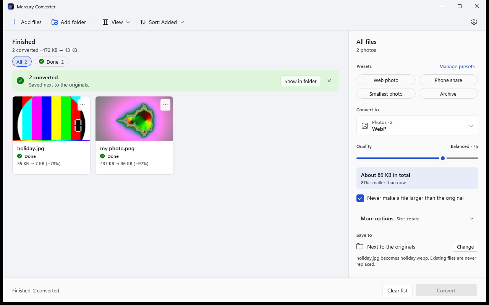
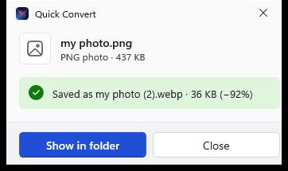

Convert anything.
Keep it on your PC.
A free file converter for Windows. Photos, GIFs, video and audio, from one simple window or from File Explorer's right-click menu. Nothing is uploaded, ever.

Why Mercury
Pick what it should become. That is all.
No codecs, no bitrates, no accounts. Mercury picks sensible settings and shows you the result before you start.
One quality slider
From Smallest file to Best quality, with the expected size shown as you move it.
Private by design
Everything is converted on this computer. No upload, no account, and the app collects no usage data.
Your files stay safe
Originals are never changed. A finished file is saved under a new name and never replaces another one.
No size surprises
If a result would be larger than the original, Mercury lowers the quality and tries again.
Kind to your PC
It checks how busy the computer is and adapts, and can decode video on your graphics card.
Right-click to convert
Choose To WebP or To MP4 in File Explorer. A small window shows progress, then opens the folder.
Light or dark
Follows your Windows setting, or press the sun or moon button to choose. Every window and menu matches.
The window
Everything at a glance
Previews, file sizes, and a progress bar on every card. Filter by Converting, Waiting, Done or Failed, retry what failed, and see exactly how much space you saved.

File Explorer
A small window for one file
Right-click a photo, video or song, pick a format, and Mercury opens a small window next to your mouse. It converts, tells you the new size, and gets out of the way.

Formats
The formats people actually use
| Kind | Open | Convert to |
|---|---|---|
| Photos | JPEG, PNG, HEIC, WebP, AVIF, JPEG XL, TIFF, BMP, camera RAW and more | WebP, JPEG, JPEG XL, AVIF, PNG, TIFF, PDF |
| GIFs | GIF | GIF, Animated WebP, MP4, WebM |
| Video | MP4, MOV, MKV, WebM, AVI, WMV, FLV, MPEG, 3GP and more | MP4, WebM, MKV, OGV, AVI, GIF, Animated WebP, audio only |
| Audio | MP3, M4A, AAC, FLAC, WAV, OGG, Opus, WMA and more | MP3, AAC, OGG, FLAC, WAV |
See it in action
Watch it work
A walkthrough of Mercury Converter, from the person who built it.
Loads from YouTube only when you press play. Open on YouTube
Get Mercury Converter
Free for everyone. Windows 10 (2004 or later) and Windows 11, 64-bit.
Windows may show a SmartScreen warning because Mercury is new and not code-signed yet. Choose More info, then Run anyway. Why does this happen?